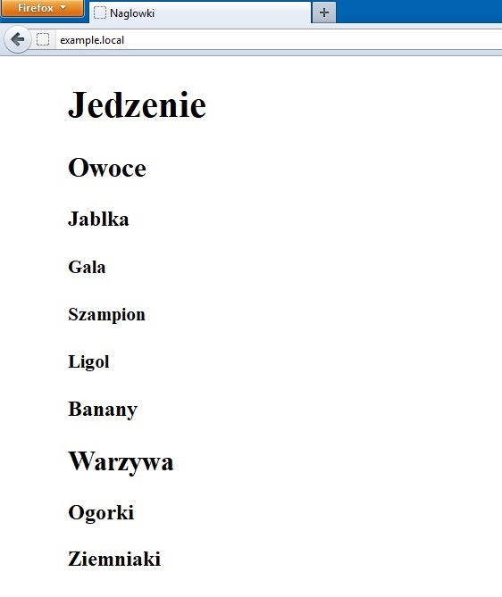

Naglówki HTML
Nagłówki można potraktować jako elementy umieszczone w szkielecie strony. Jeżeli tworzony tekst ma strukturę, wykorzystaj nagłówki do jej wyrażenia, jak w poniższym fragmencie kodu.
<h2>Owoce</h2>
<h3>Jabłka</h3>
<h4>Gala</h4>
<h4>Szampion</h4>
<h4>Ligol</h4>
<h3>Banany</h3>
<h2>Warzywa</h2>
<h3>Ogórki</h3>
<h3>Ziemniaki</h3>
W powyższym fragmencie kodu zastosowanie wcięćw, pozwoliło na pokazanie hierarchii. Przeglądarki WWW ignorują wcięcia. Ale ich zostosowanie w kodzie źródłowym znacznie zwiększa jego czytelność. W tworzonym przez siebie kodzie HTML lepiej stosować tę konwencję.
Dane wyjściowe
rysunek 1. Nagłówki HTML
Nagłówki mogą mieć dowolną długość i obejmować nawet kilka wierszy tekstu. Jednak ponieważ nagłówki są wyświetlane pogrubioną czcinką, wyświetlenie kilku wierszy tego rodzaju czcioką utrudnia ich odczyt.
Uwaga
Nagłówki poziomów od czwartego do szóstego nie są szczególnie interesujące, choć mają znaczenie w kategoriach struktury documentu. Jeżeli użycie więcej niż trzech poziomów nagłówków ma sens dla tworzonego dokumentu, wówczas należy wykorzystać te znaczniki. Następnie za pomocą arkuszy styłów można je wyświetlić w oczekiwany sposób.